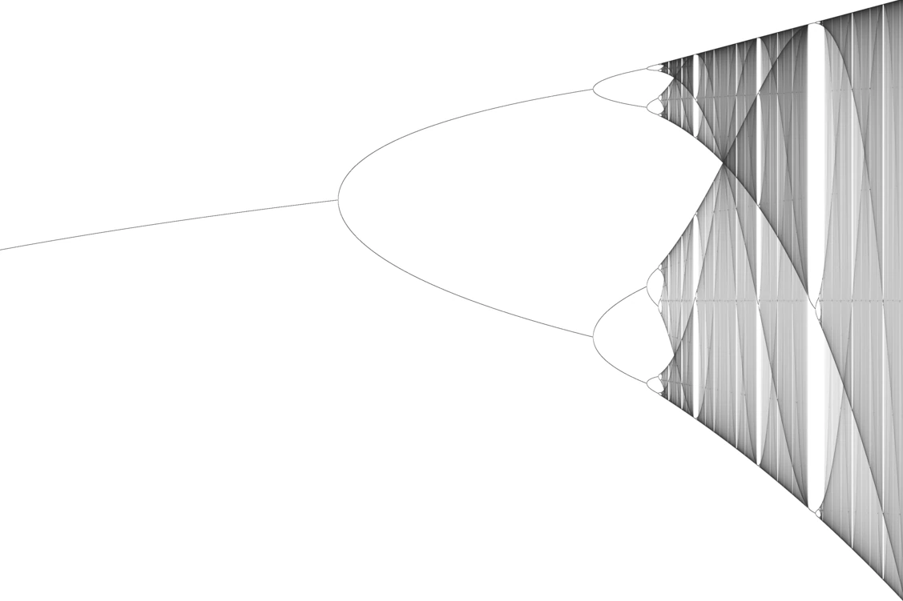
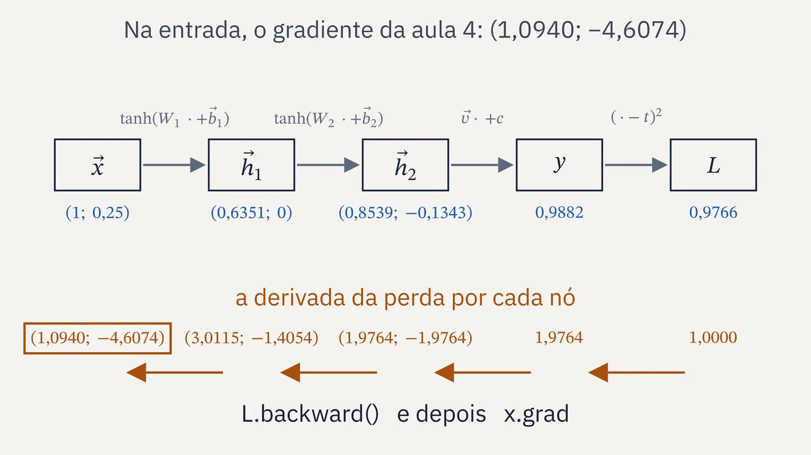
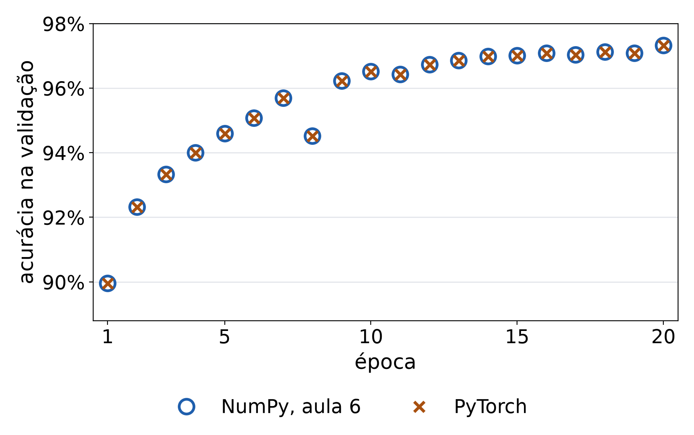
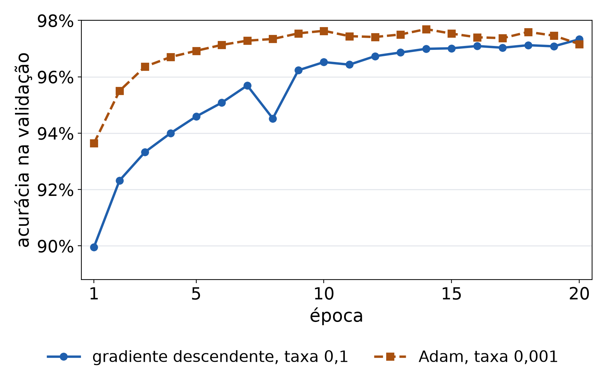
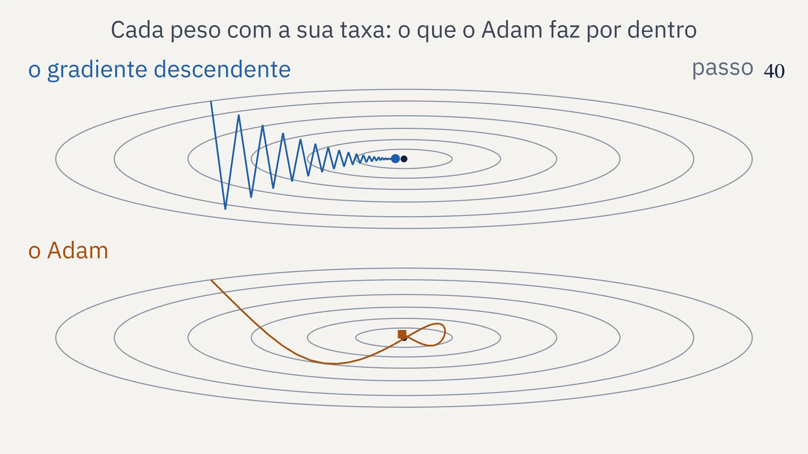
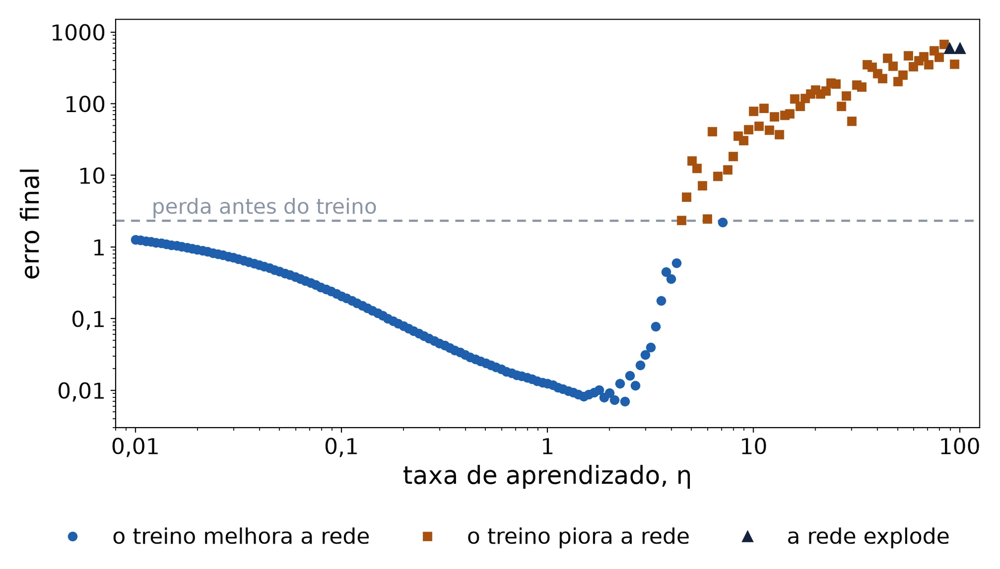
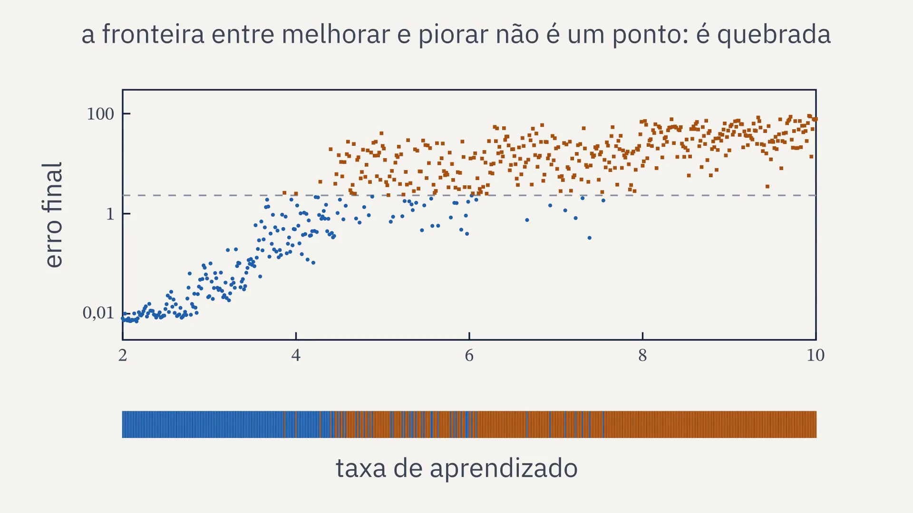
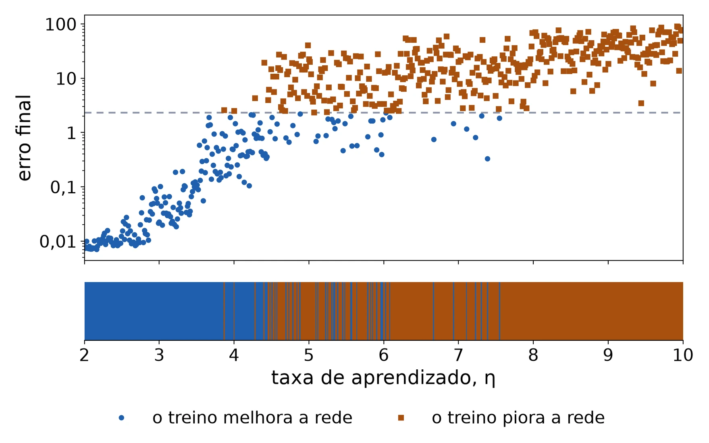

SIENA, NIPS-CERN, UFJF
Limiar
Redes neurais, do neurônio ao fractal
Aula 7: PyTorch, o que a biblioteca automatiza
27/11/2026. C∴ Chrysthofer A. A. Afonso

O diagrama de bifurcação da equação logística: um só número decide se a conta repetida converge, oscila ou vira caos. Jordan Pierce, 2011, Wikimedia Commons, CC0, recortado.
Limiar, aula 7: PyTorch


1 · Revisão
O que ficou das aulas 5 e 6, de memória
1
O que a softmax faz com as dez saídas?
2
Para que servem a validação e o teste?
3
O que é sobreajuste?
4
Por que treinar em lotes?
Limiar, aula 7: PyTorch
1 · Revisão
O fio do curso, da aula 1 à 10
1
O neurônio e o perceptron
um neurônio desenha uma reta, e nenhuma reta separa o XOR
25/09, presencial
2
Derivada e gradiente
o passo contra a derivada; a taxa grande demais faz o treino divergir
02/10, presencial
3
Matrizes e camadas
duas camadas separam o XOR, com pesos escolhidos à mão
13/11, on-line
4
O Jacobiano
a regra da cadeia com vetores, uma camada de cada vez
13/11, on-line
5
Retropropagação
a regra da cadeia, de trás para a frente, acha os pesos do XOR
13/11, on-line
6
O MNIST em NumPy
um MLP em 70 mil dígitos escritos à mão, com treino, validação e teste
27/11, on-line
7
PyTorch
a biblioteca faz a retropropagação; o erro final contra a taxa
27/11, on-line
8
Os dados do CERN
um MLP estima a massa dos dois múons, conferida pela fórmula
04/12, on-line
9
O fractal e o projeto
a fronteira entre a taxa que converge e a que diverge
04/12, on-line
10
A apresentação
a apresentação do projeto e a revisão do curso inteiro
11/12, on-line
Limiar, aula 7: PyTorch
2 · O que o PyTorch automatiza
E se a biblioteca fizesse a retropropagação?
Nas aulas 5 e 6, ela foi escrita à mão. O PyTorch guarda as contas da passada para a frente e faz a de trás para a frente sozinho.
Limiar, aula 7: PyTorch
2 · O que o PyTorch automatiza
O tensor, a tabela de números do PyTorch
o que é
forma
um número
()
um vetor
(784,)
uma matriz
(50000, 784)
um lote de imagens
(64, 28, 28)
forma, shape: quantos números o tensor tem em cada eixo
As contas são as do NumPy
X = torch.from_numpy(X)
X.shape
h = torch.tanh(W @ x + b)
com requires_grad, cada conta feita com o tensor fica registrada, para a derivada vir depois
Tensor, no curso: uma tabela de números com qualquer número de eixos. Na física, a palavra quer dizer outra coisa.
Limiar, aula 7: PyTorch
2 · O que o PyTorch automatiza
O autograd refaz a conta da aula 4
A rede do exemplo da aula 4
x = torch.tensor(X0, requires_grad=True)
h1 = torch.tanh(W1 @ x + b1)
h2 = torch.tanh(W2 @ h1 + b2)
L = (v @ h2 + c - t) ** 2
L.backward()
x.grad
pelo autograd e pela regra da cadeia da aula 4: a diferença é zero
Autograd: a biblioteca guarda cada conta da passada para a frente e aplica a regra da cadeia de trás para a frente.
Limiar, aula 7: PyTorch
2 · O que o PyTorch automatiza
O grafo das contas, para a frente e para trás
Para a frente: cada conta vira um nó do grafo
Para trás, com backward(): uma linha vezes uma matriz por camada
Grafo, no curso: o desenho das contas, cada conta um nó, ligado por setas às contas de que depende.
Limiar, aula 7: PyTorch
2 · O que o PyTorch automatiza
O grafo com números

Limiar, aula 7: PyTorch
3 · A rede da aula 6 em PyTorch
A rede e o laço do treino
A rede, a perda e o passo
rede = nn.Sequential(
nn.Linear(784, 256), nn.Tanh(),
nn.Linear(256, 10))
perda_fn = nn.CrossEntropyLoss()
opt = torch.optim.SGD(rede.parameters(), lr=0.1)
Para cada lote
opt.zero_grad()
perda = perda_fn(rede(X[i]), t[i])
perda.backward()
opt.step()
As sete linhas da retropropagação da aula 6 viram uma: perda.backward(). A softmax vai dentro de CrossEntropyLoss.
Limiar, aula 7: PyTorch
3 · A rede da aula 6 em PyTorch
A mesma conta, mais depressa

NumPy
PyTorch
teste
97,59%
97,59%
segundos por época
5,1
0,5
retropropagação
7 linhas
1 linha
Mesmos pesos iniciais, mesma ordem dos lotes, float64: a diferença é zero em todas as épocas. O tempo é o do laptop do professor.
Limiar, aula 7: PyTorch
3 · A rede da aula 6 em PyTorch
O Adam, outro jeito de dar o passo

Caixa-preta
entra o gradiente de cada peso; sai o passo de cada peso, com a taxa ajustada peso a peso
93,6% contra 90,0%
na validação, depois de uma época
97,42% contra 97,59%
no teste, depois de 20 épocas
Limiar, aula 7: PyTorch
3 · A rede da aula 6 em PyTorch
Dois jeitos de dar o passo

Limiar, aula 7: PyTorch
4 · O erro final contra a taxa
Qual a maior taxa que ainda funciona?
Na aula 2, o limiar era um ponto. Numa rede com camadas e a tanh, ele se quebra.
Limiar, aula 7: PyTorch
4 · O erro final contra a taxa
O erro final contra a taxa

Menor erro final: 0,0070, com η = 2,37. A partir de η = 4,47, o treino deixa a rede pior do que estava.
Limiar, aula 7: PyTorch
4 · O erro final contra a taxa
Perto do limiar, de perto

Limiar, aula 7: PyTorch
4 · O erro final contra a taxa
A fronteira entre melhorar e piorar é quebrada

601 taxas de 2 a 10: 383 pioram a rede, e a resposta troca 77 vezes entre taxas vizinhas.
Limiar, aula 7: PyTorch
5 · De onde vem
Do modo reverso ao PyTorch
1970
Seppo Linnainmaa descreve o modo reverso da diferenciação automática, a conta que o autograd faz.
2002
Ronan Collobert, Samy Bengio e Johnny Mariéthoz publicam o Torch, em C e Lua, no Instituto Idiap.
2016
Em setembro, sai a primeira versão do PyTorch: o Torch levado para o Python.
2017
O desenvolvimento do Torch passa para o PyTorch.
Fontes: Wikipedia, verbetes “PyTorch”, “Torch (machine learning)” e “Backpropagation”.
Limiar, aula 7: PyTorch
6 · O código
O PyTorch, passo a passo
1
autograd_exemplo.py refaz o gradiente da aula 4
2
mlp_torch.py treina a rede da aula 6, com os mesmos pesos e lotes
3
O mesmo treino com o Adam, para comparar
4
taxa.py varre 161 taxas e, de perto, 601
5
As figuras e o vídeo leem os números gravados em resultados/
O PyTorch que resolve
torch.from_numpy(X)
nn.Sequential(...)
perda.backward()
torch.autograd.grad(L, pesos)
o último devolve o gradiente sem guardá-lo, para o passo feito à mão
Limiar, aula 7: PyTorch
6 · O código
O que a entrega pede
O MNIST em PyTorch
- a rede da aula 6 com nn.Sequential
- a perda com CrossEntropyLoss
- o laço de quatro linhas
A curva da taxa
- a rede pequena da aula, sem lotes
- o erro final de várias taxas
- a melhor taxa e onde o treino piora
Entrega
- a acurácia no teste, com a semente e a versão
- a figura da taxa
- uma pergunta sobre o estudo
Extra, opcional: a mesma curva no MNIST inteiro, com lotes, para quem quiser.
Limiar, aula 7: PyTorch
7 · Fechamento
Para estudar e entregar
Estudo
- CMS, registro 303: dois múons, 2010
- Aubert e colegas, 1974: o J
- Augustin e colegas, 1974: o psi
Entrega
- o MNIST em PyTorch, com a acurácia no teste
- a curva do erro final contra a taxa
- uma pergunta sobre o estudo
A seguir
- aula 8: um MLP nos dados do CERN
- aula 9: a fronteira da taxa em duas dimensões
Limiar, aula 7: PyTorch